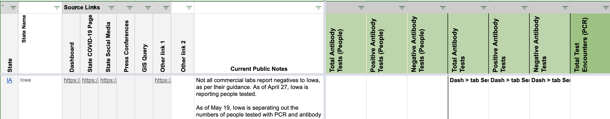

| Date | Number | Title |
|---|---|---|
| February 3, 2021, 1:21 PM PST | 1086 | [IA] Capture antigen positive as probable cases |
| February 3, 2021, 1:21 PM PST | 1086 | [IA] Capture antigen positive as probable cases |
| August 28, 2020, 1:30 PM PDT | 800 | [IA] Total PCR tests (people) on 8/27 accidentally included antigen tests |
| July 30, 2020, 6:45 AM PDT | 700 | [IA] Antibody test reporting in people |
| July 10, 2020, 7:32 AM PDT | 596 | [IA] PCL Case Historicals |
| June 26, 2020, 7:00 AM PDT | 545 | [IA] PCL Historicals and WS2 |
| March 11, 2020, 6:23 AM PDT | 1 | IA: Need live-browser capture |
#1086: [IA] Capture antigen positive as probable cases
Issue number 1086
jaclyde opened this issue on February 3, 2021, 1:21 PM PST
Labels Data quality stale
State: Iowa
Issue: Iowa is treating anitgen positive individuals as probable cases, so we are moving the time series to the Probable case metric
Comments
This issue has been closed because it was stale for 15 days, and there was no further activity on it for 10 days. You can feel free to re-open it if the issue is important, and label it as "not stale."
#1086: [IA] Capture antigen positive as probable cases
Issue number 1086
jaclyde opened this issue on February 3, 2021, 1:21 PM PST
Labels Data quality stale
State: Iowa
Issue: Iowa is treating anitgen positive individuals as probable cases, so we are moving the time series to the Probable case metric
Comments
This issue has been automatically marked as stale because it has not had recent activity. It will be closed if no further activity occurs. Thank you for your contributions!
This issue has been closed because it was stale for 15 days, and there was no further activity on it for 10 days. You can feel free to re-open it if the issue is important, and label it as "not stale."
#800: [IA] Total PCR tests (people) on 8/27 accidentally included antigen tests
Issue number 800
qpmnguyen opened this issue on August 28, 2020, 1:30 PM PDT
Labels Data quality not stale
State or US: IA
Describe the problem There was a mistake on 8/27 where the testing number lumping antigen was inputted into of total tests (people) field in IA
Link to data source We have no viable screenshot to backfill 😢
Comments
We should carry over the previous day's number.
#700: [IA] Antibody test reporting in people
Issue number 700
brianskli opened this issue on July 30, 2020, 6:45 AM PDT
Labels Historical Data PCL/SVP Historicals not stale
State or US: Iowa
Describe the problem IA's use of "Individuals" for antibody test counts implies that they report in people, not specimens, tested. States Daily needs to be updated accordingly.
Link to data source https://coronavirus.iowa.gov/pages/serology-testing
Comments
Our need to transfer to people antibody reporting was verified.
Action items:
1/4: WS2 private note left
Before"
 After:
After:

2/4: WS2 source notes changed
Before:

After:

3/4: Data in States Daily copied to correct columns Before: After:
4/4: WS2 pre-filled
#596: [IA] PCL Case Historicals
Issue number 596
pscsharon opened this issue on July 10, 2020, 7:32 AM PDT
Labels Backfill Missing Data PCL/SVP Historicals
State: Iowa
Description: CTP started capturing Positive Cases (PCR) / positiveTestsViral on 4/29. We should back-fill the values before that date in Iowa. It is unlikely that IA used lumped values and then went to lab-confirmed only, given the consistent time-series for Positives. The wording before the dashboard changed also is in line with our definition for Lab Confirmed Only.
The state only reports cases confirmed by viral test. State must explicitly use the word "confirmed", inviting interpretation by CSTE case definition, or specify they are using PCR/viral tests, to be labelled as lab-confirmed. Positives should therefore be copied into Positive Cases (PCR).
Source: Screenshots from Iowa's websites & previous capture by CTP of the same information
Comments
UPDATE: 7/13
While backfiling, we came across a graph on the website that reports confirmed cases by day [https://coronavirus.iowa.gov/pages/case-counts]. Here is the graph:
This graph is hoverable and the data can be automatically fetched from ArcGIS layers.
Using IA's data definition, it was confirmed that IA reports in lab-confirmed cases. Values from Positives were then copied into Positive Cases (PCR) in States Daily.
Before:
 After:
After:

#545: [IA] PCL Historicals and WS2
Issue number 545
pscsharon opened this issue on June 26, 2020, 7:00 AM PDT
Labels PCL/SVP Historicals
Death values are historically recorded in both the "Deaths" and "Deaths (Confirmed)" columns for IA. However, IA’s death values are unclear about what they represent, so they should only be recorded in the main "Deaths" field.
Comments
Updated tooltip from "Dashboard" to "no data" as well as added process note.
BEFORE
AFTER
#1: IA: Need live-browser capture
Issue number 1
joshuaellinger opened this issue on March 11, 2020, 6:23 AM PDT
IA scraping fails due to a security project (Incapsula). It breaks for any python requests based approach.
The link is https://idph.iowa.gov/Emerging-Health-Issues/Novel-Coronavirus
Can someone setup a chromium proxy that deals with this?
- Setup an endpoint like http://mysite.org/proxy?state=IA
- when you get a request, spawn up a captive browser using something like Nightwatch or Selentium(sp?)
- issue the request to the link above
- return the HTML.
Comments
Iowa is hopeless -- we'll need to check it manually.
Iowa is hopeless -- we'll need to check it manually.
This issue has been automatically marked as stale because it has not had recent activity. It will be closed if no further activity occurs. Thank you for your contributions!